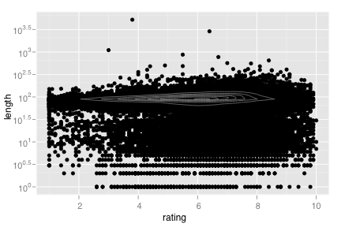
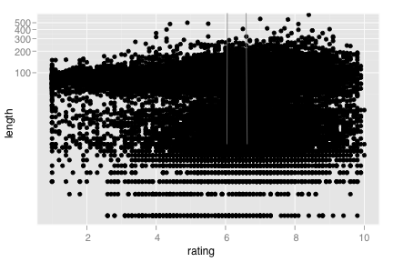
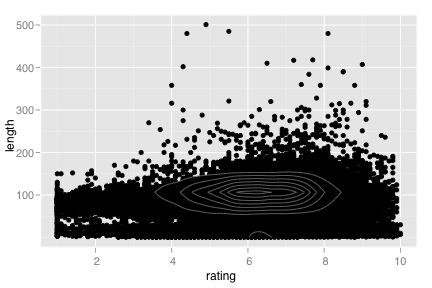

stat_density_2d
Density estimation, 2D
Details
Aesthetics
The following aesthetics can be used with stat_density_2d. They are listed along with their default value. All geoms and scales can also use the group aesthetic. Read how this important aesthetic works in scale_group. Typically, you will associate an aesthetic with a variable in your data set. To do this, you use the aes function: stat_density_2d(aes(x = var)). Scales control the details of the mapping between data and aesthetic properties; after each aesthetic are listed scales that can be used with that aesthetic. The scale documentation will also provide references to help you interpret the default values.
Instead of mapping an aesthetic to a variable in your dataset, you can also set it to a fixed value. See the parameters section for details.
group:
..piece..
Default geom
geom_density_2d. Override with the geom argument: stat_density_2d(geom="point").
Examples
> m <- ggplot(movies, aes(x=rating, y=length)) + geom_point() + scale_y_continuous(limits=c(1, 500)) > m + geom_density_2d()> > dens <- MASS::kde2d(movies$rating, movies$length, n=100) > densdf <- data.frame(expand.grid(rating = dens$x, length = dens$y), z=as.vector(dens$z)) > m + geom_contour(aes(z=z), data=densdf)
> > m + geom_density_2d() + scale_y_log10()  > m + geom_density_2d() + coord_trans(y="log10")  > > qplot(rating, length, data=movies, geom=c("point","density2d"), ylim=c(1, 500)) 